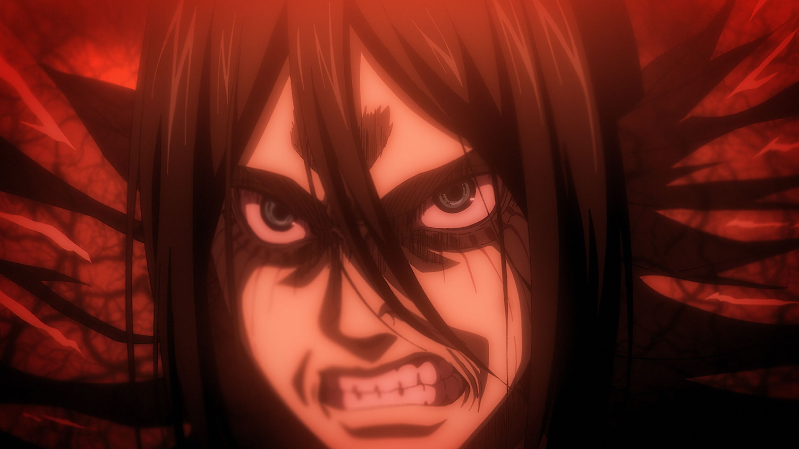
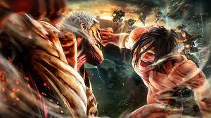
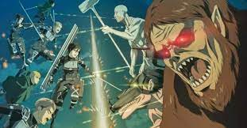
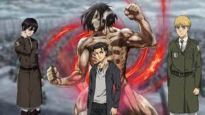

Shingeki no Kyojin (進撃の巨人 lit. Titã de Ataque?) também conhecido pelo título em inglês Attack on Titan, é uma série de mangá escrita e ilustrada por Hajime Isayama. É ambientado em um mundo onde a humanidade vive dentro de cidades cercadas por três enormes muralhas que os protegem dos gigantescos humanóides devoradores de humanos chamados de Titãs; a história segue Eren Yeager, que jura exterminar os Titãs após um Titã causar a destruição de sua cidade natal e a morte de sua mãe. Shingeki no Kyojin teve seus capítulos publicados na revista mensal de mangás shōnen Bessatsu Shōnen Magazine da editora Kodansha entre setembro de 2009 a abril de 2021, com os seus capítulos compilados em 34 volumes tankōbon.

Os seres humanos se depararam com a repentina aparição dos Titãs no distrito de Shiganshina após mais de um século de paz. Eren Yeager, Mikasa Ackerman-sua irmã adotiva- e seu amigo de infância, Armin Arlert, testemunham o aparecimento de uma Titã de 60 metros, o Titã Colossal, e outro menor, o Titã Blindado, que abrem uma brecha na muralha Maria. Os Titãs, em seguida, invadem a cidade e fazem uma carnificina, incluindo a morte da mãe de Eren, que é devorada diante de seus olhos. Ele então decide se vingar e matar todos os Titãs, entrando para Divisão de Exploração. Cinco anos mais tarde, os três graduados cadetes foram enviados para o distrito de Trost, uma das cidades da fronteira que se localiza na Muralha Rose, quando o Titã Colossal reaparece e faz novamente uma brecha na muralha; na batalha que se seguiu, Eren foi devorado por um dos Titãs na frente de Armin. Pouco tempo depois, um Titã aparece e ataca os outros Titãs, em vez de seres humanos; esse acaba se revelando o próprio Eren, que de alguma forma adquiriu a capacidade de se transformar em Titã. Embora seja considerado uma ameaça por alguns, ele ajuda os soldados a recuperar o distrito de Trost fechando a brecha da muralha. Depois de ser levado à justiça, ele é recrutado pela Divisão de Exploração com a supervisão da Divisão de Exploração de Operações Especiais, liderada pelo capitão Levi. Saiba mais
First episode date: april 7, 2013
English Network: au sbs 2sea aniplus asiaus adult swim (toonami)
Adapted from: Attack on Titan
Original Network: MBS (!-37); NHK General tv (28-)
O musical
A nova temporada do anime Attack on titan é prevista para o primeiro semestre de 2023. Entretanto, a franquia possui inusitados produtos derivados para a alegria dos fãs. Mesmo com o final do mangá em 2021, a história de Eren Jaeger continua animando milhões de pessoas ao redor do mundo. E no Japão, tamanha é a empolgação com a obra que decidiram produzir um musical oficial. Confira um trailer da adaptação abaixo: Os produtores mostraram pela primeira vez um pouco do musical, que é previsto para estrear no próximo ano. Pelo que vemos, é claro que a inspiração virá da primeira fase da série.
Attack On Titan: humanidade está ameaçada no útimo episódio; veja promo!
/a>O sucesso Attack On Titan se tornou um dos animes mais comentados durante o ano de 2022, com o retorno da sua 4ª e última temporada, que trará novos rumos para a história de Eren e sua equipe.
Attack on Titan: musical inspirado em mangá ganha trailer épico; veja!
Attack on Titan: musical inspirado em mangá ganha trailer épico; veja! 06/09/2022 às 17:00 Luciana Penante Imagem de: Attack on Titan: musical inspirado em mangá ganha trailer épico; veja!Imagem: Divulgação/Reprodução Internet. A página do Twitter Attack on Fans postou o trailer do musical live-action inspirado no mangá e anime Attack on Titan. O vídeo apresenta os atores que irão interpretar Eren, Mikasa, Armin e Levi. O trailer termina com uma cena que revela rapidamente um dos monstros que o grupo enfrentará. Confira a seguir!
Attack On Titan: 5 momentos em que Eren Yeager foi um vilão
Attack On Titan é, sem sombra de dúvidas, um dos animes mais famosos e assistidos atualmente no mundo inteiro e acompanha o protagonista Eren Yeager e sua equipe nos conflitos envolvendo os titãs.